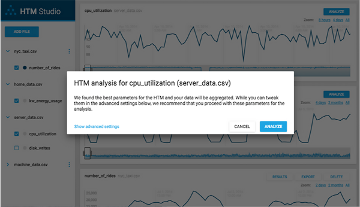
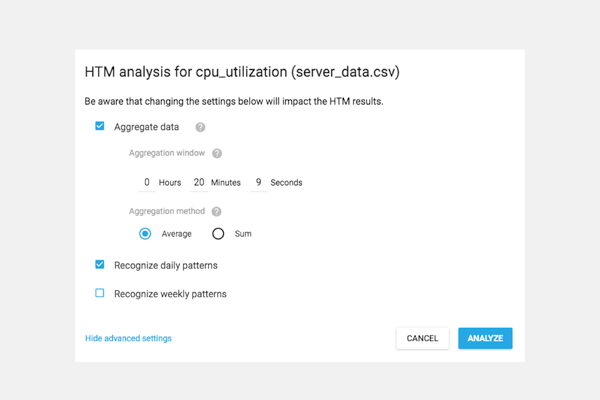

How HTM Studio Came to Life
 Numenta•Marion Le Borgne & Taylor Wirfs
Numenta•Marion Le Borgne & Taylor WirfsIt’s been a few months since we first launched HTM Studio and things have calmed down from a development perspective. I sat down with Marion Le Borgne, project manager and lead engineer for HTM Studio, to get her thoughts on the process and efforts it took to build the application.
Before we get into the nitty-gritty of software development, can you tell us a little more about yourself and role at Numenta?
I am a Senior Software Engineer at Numenta and Project Manager for HTM Studio. I started my career as a Business Analyst at Partech Ventures in Europe and then joined CloudWeaver (acquired by F5 networks) as a Data Scientist. After attending a Hackathon organized by the Numenta OS community in 2014, I was hooked by the mission of the company. I started working at Numenta in 2015. In the same year, I co-founded NeuroTechX, an international non-profit for neurotechnology.
Why did you build HTM Studio?
HTM Studio was built in response to the many inquiries about our technology from users who wanted to use HTM algorithms, but lacked the technical skill needed to experiment with our open source code. We decided to build an app that would accomplish exactly that: allow users to try HTM algorithms on their own data in minutes, without prior coding experience or a knowledge of HTM algorithms.
What was the development process like?
Research and Product Design
My initial research helped me develop the first set of features in HTM Studio. I started researching existing tools to understand how people packaged other streaming analytics offerings. I also reviewed past proof of concepts to learn what had and had not worked for Numenta. During my research, it became clear that HTM Studio needed to be a desktop app to address data privacy concerns. After that, I created a first round of wireframes for the general flow of the app. A couple of feedback sessions later, the wireframes started looking like today’s HTM Studio.
Architecting the Application
Next, we began to greenfield the app and lay out the architecture. This leads me to the unique technical stack in HTM Studio. We wanted to build a desktop app that leveraged modern web technologies, so that HTM Studio was responsive and beautiful. We chose Github Electron, a framework that lets you write cross-platform desktop applications using JavaScript, HTML and CSS. We packaged Python with NuPIC, so it could run within HTM Studio. This allowed users with no programming knowledge to use NuPIC without having to install it separately.
Testing the Machine Learning Algorithm
We developed a method to simplify the process of finding the best HTM parameters called “param finder”. Historically we used a complex method called swarming, but the new param finder skips this step and quickly finds the optimal parameters. Then, we spent about a month on the accuracy of the algorithm results. It was important that the app (and especially the new param finder) provided accurate results on various datasets. We added compatibility tests with NAB to test the results.
Testing the UX
Once we had these three elements (Electron, portable NuPIC and param finder) in place, we started UX testing. The goal was to gather feedback from a variety of users with different datasets and use cases, to fine tune the app and ensure HTM Studio was easy to use. We launched the private beta in May, and went through a lot of QA testing and bug hunting. A few weeks later, we were finally able to launch the public release.
Was there anything that surprised you during development?
We had a couple setbacks that were mainly on the technical side. First, packaging NuPIC (the Python bindings and C libraries) along with a portable Python distribution was a project in itself. We wanted to ensure that users who did not have NuPIC or Python could run HTM Studio. Second, we wanted to incorporate dynamically updating charts to demonstrate the continuous learning that occurs in the HTM algorithms. It took us a while to reach a point where chart navigation was smooth and responsive.
How was the launch experience?
The launch went well. I had numerous 1:1 sessions with private beta users to get feedback on the app before the final launch, so there weren’t any last minute surprises. The feedback from these sessions was very valuable. We learned about various use cases, data formats and how users intended to use HTM Studio. These 1:1 sessions confirmed two things: the target audience for HTM Studio and which features should be added or simplified.
What’s your favorite feature and why do you think it’s useful?
The param finder is a great feature. It allows you to get up and running with HTM technology in a couple of minutes, without having to worry about setting any parameters. I especially like that this feature is coupled with the “advanced settings” feature. That way, if you are familiar with HTM theory, you can have more control over the machine learning algorithm.

HTM Studio automatically determines the best parameters for your dataset.

Users familiar with HTM can tweak their parameters in advanced settings.
If you had an infinite amount of resources available, what would you include in a future version?
Predictions. I think this would be a really great addition to HTM Studio, which is currently geared towards anomaly detection.
Any last thoughts?
Shaping and building this app was a really collaborative process, with a lot of feedback from the Numenta team and private beta testers. Collaboration was required between research, engineering and product teams, and I enjoyed this aspect of the project the most. HTM Studio is built on years of research that made the HTM algorithms what they are today. It’s great to see that HTM algorithms are now accessible to anyone.
Numenta•Marion Le Borgne & Taylor Wirfs